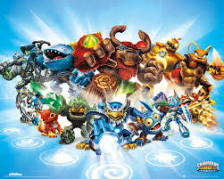
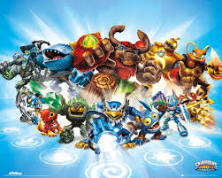

Skylanders was a game created when activion got the rights to the Spyro franchie. The first game Skylanders Spyro Adventure was realease in October 12, 2011. Hit the market and it was a complet sucess. Bringing in millions of dallors for Actvion. This game also intudce us to the Toys to Life. By placing the toy on the protal of power. The toy was brought to life in the game. With this you had alot of different play stiles as each Skylander had there own movesets and ablitys. And width each game we got new Skylander to collect. The gigants where strong, they where able to do events such as feet of strenghs. In Swap Force you could swap the top and bottom half of the swapers to make new combinations. In Trap team you where able to trap villians and play as them. Super Chargers change the game play alot they added in vheicals to drive around in. and the final game as of this prodjuct. Is Skylanders Imaginatiors, where the hole gimic with this game is you could create your own Skylanders using the creation crystals.
The entire history of Skylanders 
